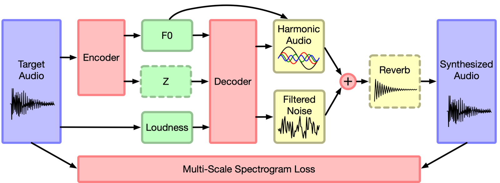

Part 1: the original DDSP against DDSP-Violin
Do the physical constraints cost anything when both models read the audio they resynthesise?
Test loss: without z, DDSP-Violin + room reverb is level with DDSP on Garner (6.97 against 6.94) and on ev03 (5.89 both) and 0.39 below it on all players (5.93 against 6.32). With z, it is below DDSP + z on every set: by 0.18 on Garner, 0.04 on ev03 and 0.29 on all players.
DDSP
The model of Engel et al. (ICLR 2020), run with the published code
(magenta/ddsp 3.7.0, solo_instrument.gin).
- Inputs: pitch and loudness. DDSP + z adds the z encoder of the paper.
- Decoder outputs per frame: amplitude, 60 harmonic amplitudes, 65 noise-band magnitudes.
- Reverb: trainable, 3 s (48,000 samples), on the sum of harmonics and noise, dry signal added. No body filter.
Diagram

From Engel et al. (2020).
DDSP-Violin
The model of our AES 2026 paper (code).
- Inputs: pitch, loudness and the harmonic amplitudes of the audio, read by the harmonic encoder. + z adds the main z encoder of the paper.
- From the harmonic encoder: the brightness α and the bow position k, fed to the decoder and to the masks.
- Decoder outputs per frame: amplitude, 60 per-harmonic residuals (within ±6 dB), 65 noise-band magnitudes.
- Body filter: learned, 2,048 samples, on the harmonic part.
- Residual loss at weight 0.3.
- + room reverb: the same trainable 3 s reverb as DDSP, on the sum of the filtered harmonics and the noise.
Diagram

- DDSP has its 3 s reverb: compare it with the DDSP-Violin + room reverb rows.
- DDSP's loss curve on all players is jagged: its reader shuffles 1,000 examples at a time, 2% of that set.
Trained on the solo violin set (Garner), 50K steps
| Model | Garner, Partita 1, Double (VI)training set | Garner, Partita 1, Double (II)training set | Garner, Partita 1, Allemandatest set | Garner, Partita 1, Allemandatest set | Loss, training | Loss, test |
|---|---|---|---|---|---|---|
| Recording | 0:00 | 0:00 | 0:00 | 0:00 | ||
| Original DDSP | ||||||
| DDSP | 0:00 | 0:00 | 0:00 | 0:00 | 5.44 | 6.94 |
| DDSP + z | 0:00 | 0:00 | 0:00 | 0:00 | 4.93 | 6.65 |
| DDSP-Violin | ||||||
| DDSP-Violin | 0:00 | 0:00 | 0:00 | 0:00 | 4.89 | 7.07 |
| DDSP-Violin + room reverb | 0:00 | 0:00 | 0:00 | 0:00 | 4.75 | 6.97 |
| DDSP-Violin + z | 0:00 | 0:00 | 0:00 | 0:00 | 4.85 | 6.60 |
| DDSP-Violin + z + room reverb | 0:00 | 0:00 | 0:00 | 0:00 | 4.71 | 6.47 |
Training loss curves
DDSPDDSP + zDDSP-ViolinDDSP-Violin + room reverbDDSP-Violin + zDDSP-Violin + z + room reverb
Trained on one MOSA player (ev03), 50K steps
| Model | ev03, Mendelssohn me4, take 1training set | ev03, Debussy de1, take 2training set | ev03, Mozart mo5, take 2test set | ev03, Debussy de2, take 2test set | Loss, training | Loss, test |
|---|---|---|---|---|---|---|
| Recording | 0:00 | 0:00 | 0:00 | 0:00 | ||
| Original DDSP | ||||||
| DDSP | 0:00 | 0:00 | 0:00 | 0:00 | 5.71 | 5.89 |
| DDSP + z | 0:00 | 0:00 | 0:00 | 0:00 | 5.08 | 5.65 |
| DDSP-Violin | ||||||
| DDSP-Violin | 0:00 | 0:00 | 0:00 | 0:00 | 5.19 | 6.05 |
| DDSP-Violin + room reverb | 0:00 | 0:00 | 0:00 | 0:00 | 5.04 | 5.89 |
| DDSP-Violin + z | 0:00 | 0:00 | 0:00 | 0:00 | 5.01 | 5.63 |
| DDSP-Violin + z + room reverb | 0:00 | 0:00 | 0:00 | 0:00 | 5.04 | 5.61 |
Training loss curves
DDSPDDSP + zDDSP-ViolinDDSP-Violin + room reverbDDSP-Violin + zDDSP-Violin + z + room reverb
Trained on all MOSA players, 50K steps
| Model | ev03, Mendelssohn me4, take 1training set | ev03, Debussy de1, take 2training set | ev04, Bach ba3, take 2test set | yv02, Debussy de2, take 3test set | Loss, training | Loss, test |
|---|---|---|---|---|---|---|
| Recording | 0:00 | 0:00 | 0:00 | 0:00 | ||
| Original DDSP | ||||||
| DDSP | 0:00 | 0:00 | 0:00 | 0:00 | 6.19 | 6.32 |
| DDSP + z | 0:00 | 0:00 | 0:00 | 0:00 | 5.64 | 5.79 |
| DDSP-Violin | ||||||
| DDSP-Violin | 0:00 | 0:00 | 0:00 | 0:00 | 5.77 | 5.91 |
| DDSP-Violin + room reverb | 0:00 | 0:00 | 0:00 | 0:00 | 5.80 | 5.93 |
| DDSP-Violin + z | 0:00 | 0:00 | 0:00 | 0:00 | 5.36 | 5.47 |
| DDSP-Violin + z + room reverb | 0:00 | 0:00 | 0:00 | 0:00 | 5.39 | 5.50 |
Training loss curves
DDSPDDSP + zDDSP-ViolinDDSP-Violin + room reverbDDSP-Violin + zDDSP-Violin + z + room reverb